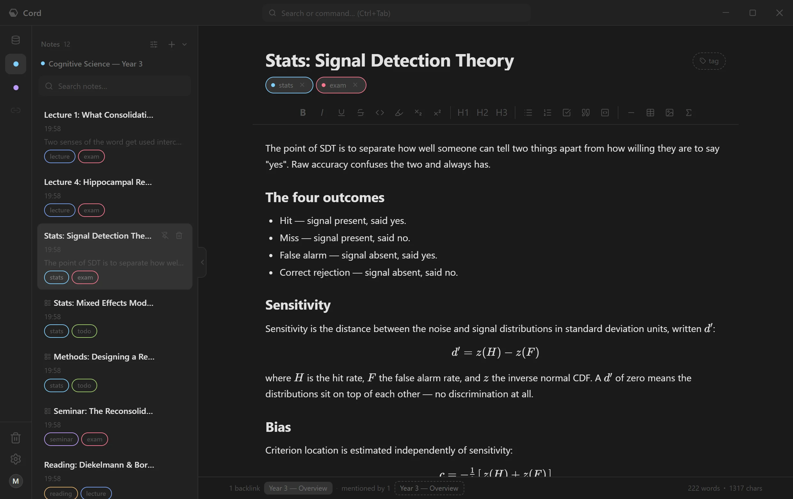
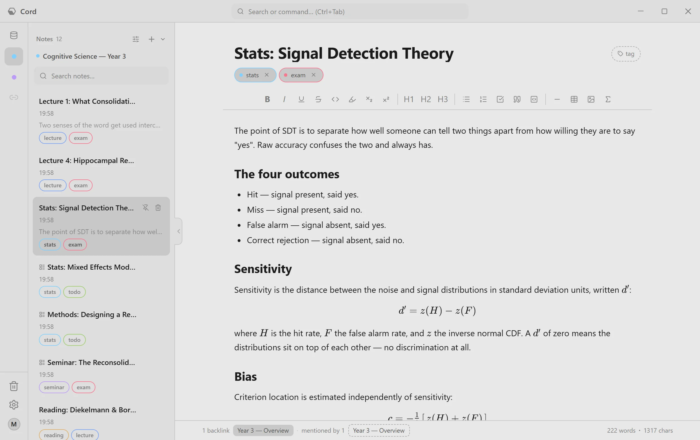
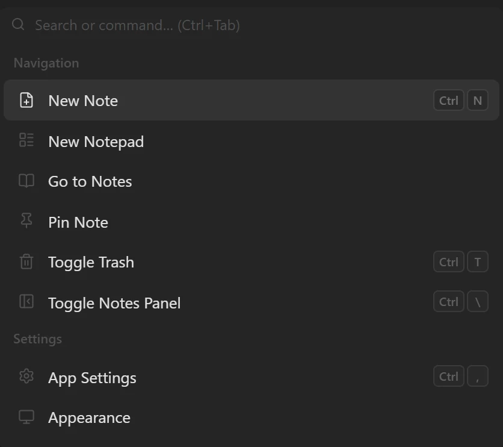
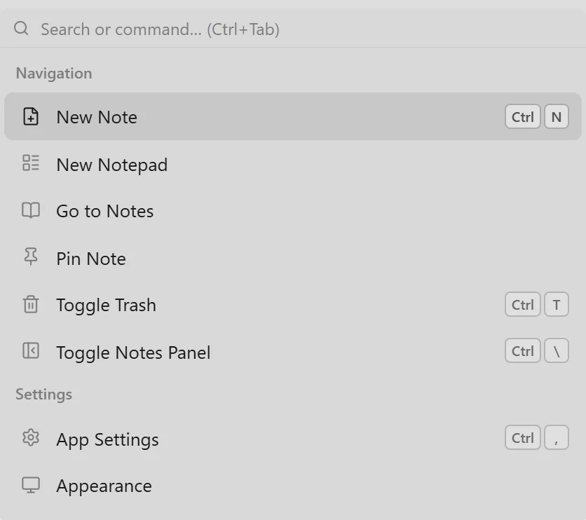
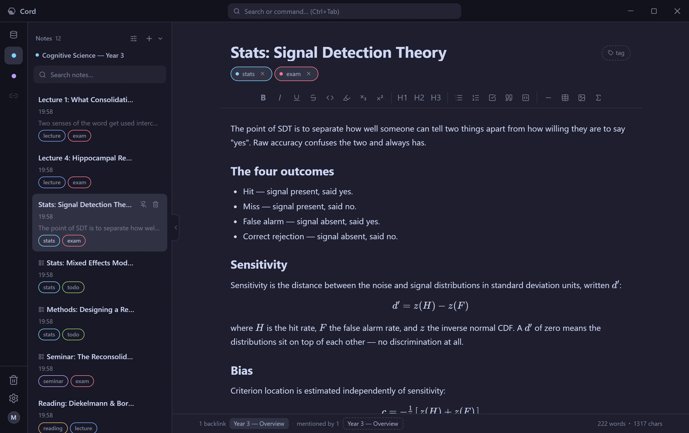
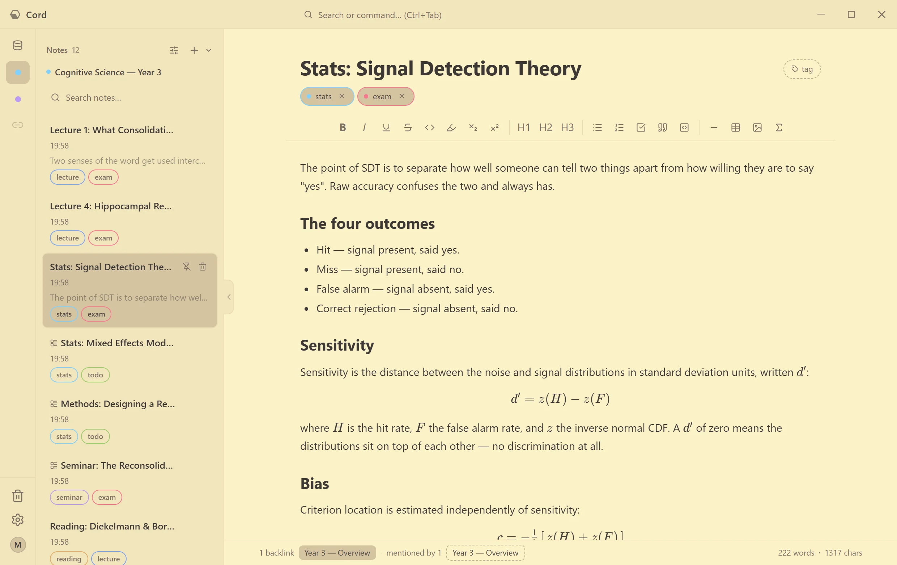

Linked notes that stay on your computer.
Type [[ to link any note. No online account, no cloud.


Type [[ to link a note.
Pick a note from the list and the link shows up on both ends: the other note lists it in its backlinks bar. Titles you mention without linking get picked out too, so you can link them later.
Essay Plan
Diekelmann and Born cover this in Reading: Diekelmann & Born
- Reading: Diekelmann & Born
- Reading: Wilson & McNaughton
Reading: Diekelmann & Born
Sleep supports both declarative and procedural memory, by different routes.
Tag one paragraph.
A notepad is a page of blocks, and each block has its own address. Tags and links can point at a single paragraph, with no need to tag the whole page.
Notes and notepads share one format, so converting between them changes nothing in the document. A whole list counts as one block.
Lecture 1
Systems consolidation
Slow and distributed. The trace moves from the hippocampus to the neocortex over days to years.
examThis is the one the sleep literature is almost always about.
Quote a block. Edit it once.
A quote is a reference to the original block. Cord reads the text from its source every time it shows it, so the quote can't go stale.
Quotes are read-only and link back to where they came from.
Lecture 1
Papers that conflate the two produce arguments that cannot be settled.
Essay Plan
From the first lecture:
Lecture 1 Papers that conflate the two produce arguments that cannot be settled.
Search as you type.
Full-text search runs in Rust against SQLite, inside the app. It matches inside words, so a fragment is enough.
3 notes
- Lecture 1: What Consolidation Means
- Seminar: The Reconsolidation Debate
- Essay Plan: Does Sleep Cause Consolidation?
Everything from the keyboard.
A command palette reaches the rest of the app, and every shortcut can be rebound. This page has one too: press Ctrl K.


Coming from Obsidian or Notion?
What carries over
The [[ habit, backlinks, tags, markdown shortcuts and a command palette.
Bringing your notes
Paste a note's markdown and it becomes formatted text. It's one note at a time, because there is no bulk importer yet.
What's different
Notes live in one database, not a folder of files. There is no graph view, no plugin system and no sync yet.
Try the editor.
This is Shuttle, the editor inside Cord, running in this page. Nothing you type leaves the tab.
- # heading
- **bold** bold
- [[ link a note
- / everything else
32 more themes, each light and dark.
Mono is the default. The rest live in cord-themes. Import a folder, a zip or a Git repo, or write your own in CSS.


The details.
- Storage
- Your notes live in a SQLite database in your user folder:
~/.cordon Windows and macOS,~/.local/share/cordon Linux. - Network
- Works offline. No online account and no telemetry. Cord checks GitHub for updates.
- Sync
- None yet. Your notes stay on the one computer.
- Lock screen
- Local accounts on your computer, unlocked with a PIN. The PIN keeps other people out of Cord. It does not encrypt your files.
- Structure
- Vaults keep separate work apart. Tags cut across the notes in a vault. Links connect any two notes.
- Writing
- Maths, tables, code highlighting, task lists, toggles, images and embeds. The editor is Shuttle.
- Source
- cord-note/cord under AGPL-3.0. Built with Tauri, Bun, React and SQLite.
Download Cord.
v2.4.1
- Windows 10 and 11, 64-bit Cord_2.4.1_x64-setup.exe 35 MB Download
- macOS Apple Silicon Cord_2.4.1_aarch64.dmg 31 MB Download
- Debian, Ubuntu x86-64 Cord_2.4.1_amd64.deb 43 MB Download
- Fedora x86-64 Cord-2.4.1-1.x86_64.rpm 43 MB Download
-
Arch
x86-64, install with
pacman -Ucord-bin-2.4.1-1-x86_64.pkg.tar.zst 41 MB Download - Any Linux x86-64, updates itself Cord_2.4.1_amd64.AppImage 120 MB Download
Not code-signed yet
Windows and macOS will object the first time, because there is no certificate behind the installer. Updates are signed, and Cord checks them before installing.
- Windows: SmartScreen calls it an unrecognised app. Choose More info, then Run anyway.
- macOS: Gatekeeper refuses to open it. Right-click the app, choose Open, then confirm.
- Linux: no warning. Mark the AppImage executable with
chmod +xfirst.